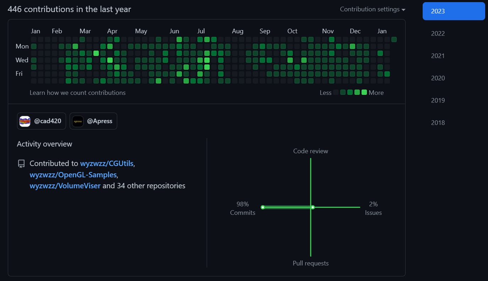
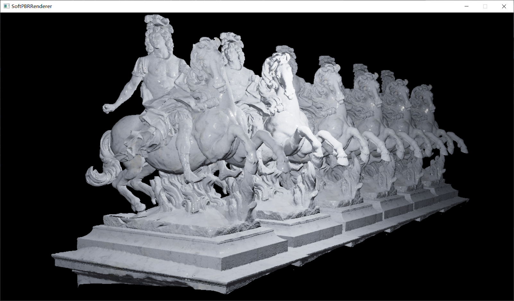
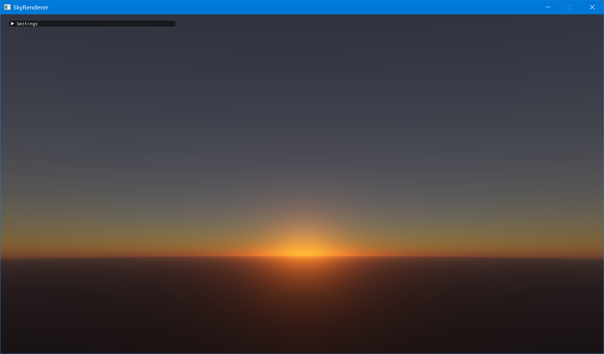
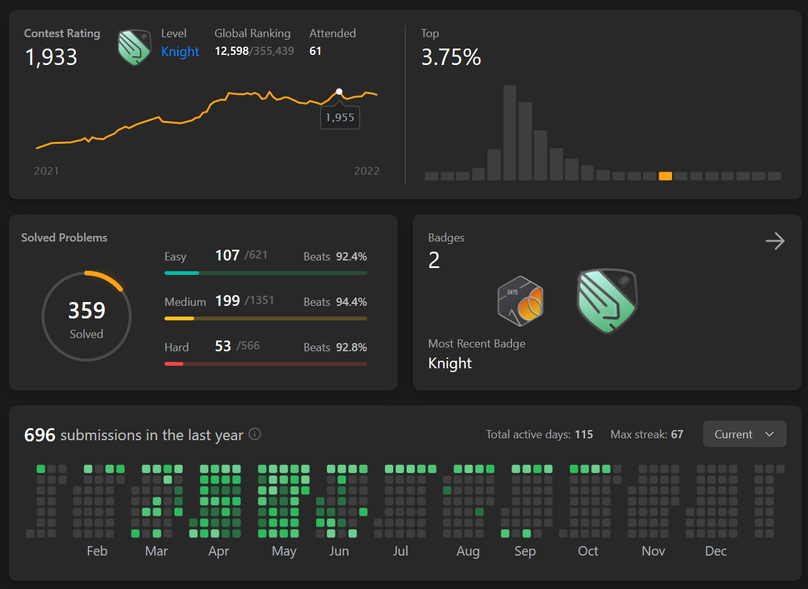
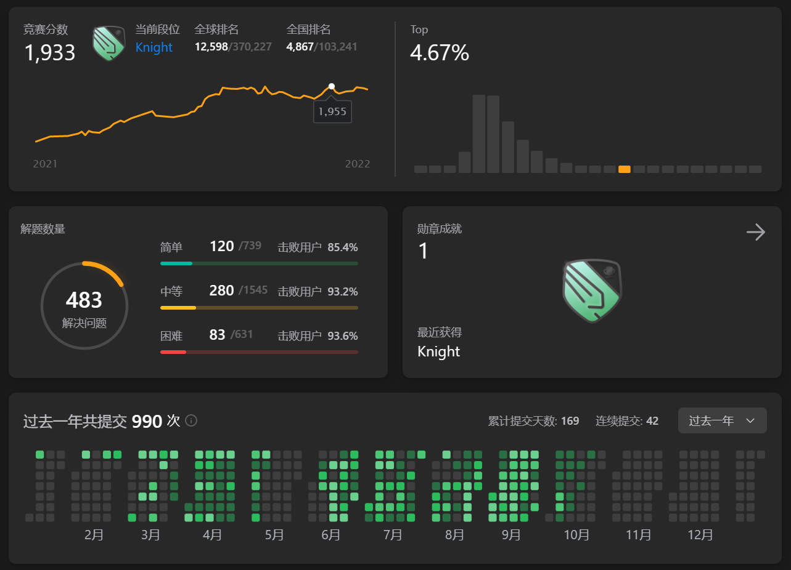
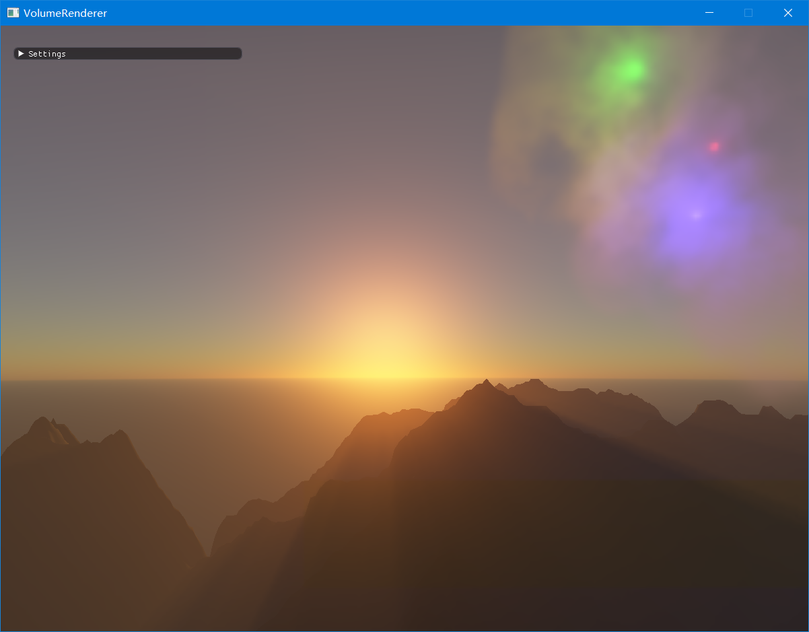
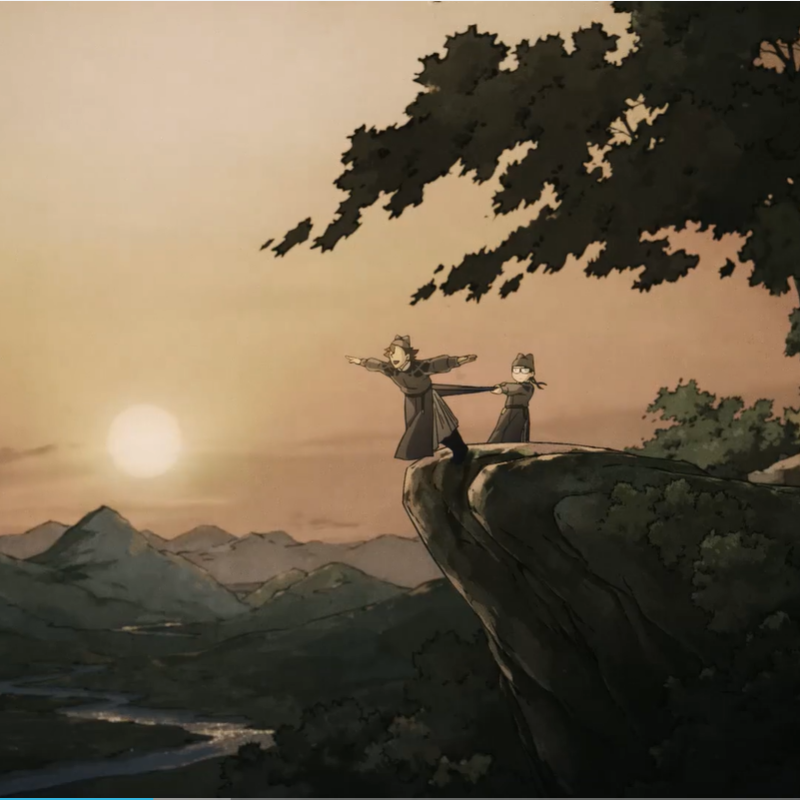

简单来说，今年写了很多代码，好像学了很多知识和技术，但感觉又没学什么，
在这里简单回顾和记录一下疯狂的一年。

二月份刚回校的时候，就感觉不能再一股脑地埋头苦干在实验室项目中，
是时候为了秋招做点实质性的准备了，比如学习真正的图形学、在leetcode上刷题等。
那个时候实验室还要完成一个vulkan版本的大规模体渲染，
而学习vulkan也是属于真正的图形学（未来工业界应用会更多）范畴，
因此从二月份到四月中旬，也是一直主要在写这个项目。
在这个过程中，顺便重新写了一下软光栅渲染器，
研一刚进来的时候上图形学课程就已经写过一个，
感觉那个时候写的很烂，虽然重新写的也不怎么样，
我以为经过一年多，我的c++水平有了显著的提升，
但其实年初的时候还是属于量变的过程中。
2021年末的时候参考learnopengl实现过ibl效果，
也用opengl自己写了一下games202相关的作业，不过写的很简单，有挺多错误的，最后的效果也不佳。
由于第二次写软光栅，写完后感觉可以把ibl效果加上去，然后就融合了一下，效果也就中规中矩吧，
但是比我原来的软光栅确实好多了…虽然原来的软光栅重点是层次zbuffer和场景八叉树等加速，
着色效果我就是简单的法向量着色，实在是太懒了吧，可能bling-phong我实在是不想写，那个时候也不知道ibl。

二月到四月中旬，主要是在写vulkan版本的大规模体渲染。大规模体渲染我在上一年已经写的差不多了，
虽然那个版本的框架也是我精心设计过的，但是那时候水平有限，很多东西我发现在我写完后，可能可以进一步优化，
甚至是整个框架本身，很多基础的东西都有些问题，但是这个版本是可以使用的，基本满足了老师那个时候提的所有要求，
虽然性能和质量上略有不足，一方面是代码水平有限，一方面也是算法太朴素了，完全是一种工程性质的作业，
在我看来，可能就是实现几年前别人论文中提到的一个系统，但是像这种工程性质的项目，
开发者的经验和水平是相当重要的，而彼时的我可能连c++都还没摸清，更不用说一些对操作系统、底层硬件特性的了解和利用。
因此之前的项目结构还是比较简单的，相信如果后面有人要改，其实是很容易的。
那么用vulkan重写一遍，当然是完全从零开始搭框架喽…
考虑地十分周到全面，vulkan不应该是整个项目的基础，而是一种可选的后端实现，也可以是opengl、cuda之类的，
然后渲染器、数据加载器等当然要用插件形势提供。
而之所以要用vulkan，其实是为了跨平台和处理多gpu的情况，
那么对于vulkan资源的创建和共享就要有一定的了解，
vulkan不愧是新世代图形api，概念十分多，写起来也十分麻烦，不过好在官方的文档还是比较详细的，
然后我也有opengl和cuda的基础，就这样折腾后，最后还是搞定，可以正确运行，渲染的性能和效果都是ok的。
我当时还以为我应该是vulkan入门了，但是后面七八月份整理图形学资料的时候发现，
我当初应该只学了个皮毛吧？原来入了虚假的门。vulkan的多线程和同步才是它的精髓，难到我现在也不知道怎么描述了，
当时我也没有完全理解，后面也没继续深入学习和使用，自然是忘了，但是之后应该是要拾起的…
这个项目除了学了一点点vulkan之外，其实对我的c++和工程能力也有很大的提升，不过仍然属于量变的过程，
因为自己在那琢磨是没有出路的，进步十分有限。
我记得好像是三月底还是四月初的时候，games104开课了，
因为往届师兄去的都是游戏引擎开发岗，而这门课刚好就是教如何写游戏引擎的，
就跟着看了，虽然最后只是看了前面几章，重点是看了渲染part部分，后面以后再补吧。
在渲染部分，讲到了大气渲染，体介质渲染模型，感觉和自己的体渲染有点关系（体介质渲染方程的不同用法），
里面介绍了一篇论文，反正看效果就是十分吸引人，因为我每天傍晚去吃饭的时候，
总可以看到落日晚霞，那种渐变的天空色彩我看着十分舒服和迷人，就决定我要复现了。
其实代码量并不大，实现上不是那么复杂，但是一开始看的时候，
有很多实时渲染领域和大气渲染模型相关的概率和知识点我是不懂的，
所以看这篇文章就十分痛苦，一遍看完，好像就明白它做了什么，
具体怎么做，完全没看懂，而它里面的公式推导也很抽象，
外加这是英文文献，看的十分头痛，在寝室看了晚上直接失眠，
睡前都是在想着为什么可以这么近似这么推导、这个定义到底是什么意思啥的。
后面参考了作者和别的大佬的dx实现，才慢慢理解论文里到底在讲什么，
hlsl确实比glsl更高级更好用。大气渲染实现了，
又想着要不加上体积云？因为games104里面也讲到了，而且体积云的实现则是与体渲染更相近的ray marching，
所以干脆一不做二不休查阅了一下体积云的模型和采样方法，然后加了上去。
体积云的建模和渲染虽然好像是很简单的，但是为了效率和高质量的平衡，
其实在实际工程中有很多优化，比如降分辨率渲染、taa等，而且对噪声的采样也很油讲究，
这方面没有深入研究过，有机会再钻研一番。最后我的天空渲染效果还是一般般的，放张图，
为什么没有火烧云呢？因为这属于技术漏洞了…


其实天空渲染最终是在七月份左右完成的，这中间其实在学习pbrt…
没错，可能画了两个月左右的时间速通pbrt，顺带参考着写了自己的光追渲染器。
我只能说，研一写的光追渲染器我压根就不懂什么叫做ray tracing！
我当时也是在瞎写一通，主要是参考games101的光追作业代码，
然后出来的效果就很离谱，属于totally wrong的那种，
然后还在根据自己的理解和猜测在那疯狂改代码调试错误，
最后很诚实地把那几张明显出错的结果图上交了，喜提七十几的分数，
问题不大…其实光追里面的概念还是很多的，而我就属于那种我要全面了解相关的知识点后，
才可以掌控全局，写出正确的代码。pbrt这本书不愧是圣经一样的存在，
介绍的非常详细，代码也有很好的注释，尽管如此，看下来其实还是有难度的，
有些part需要反复看很几遍，而且就算理论上看懂了，
到实际的代码部分可能仍然一头雾水。而且pbrt自带的代码里面有很多实际工程项目中用到的技术，
比如性能统计、内存池、线程池等，因为有很仔细地研究过它的整个源码，
因此学到了很多c++工程方面的知识。除了pbrt自身的源码外，
还参考了airguanz大佬的a-trc仓库，可以看到，大佬也是学习过pbrt的，
但是他应该是完全地吸收理解、融会贯通了，就像是用自己的语言重新叙述了一遍整个光追的故事。
同时也让我意识到了，自己写轮子库的重要性。
学习pbrt的收获还是很大的，对整个光追有了全面的了解。
光线追踪的方法，如常见的path tracing，还有更加强大的双向路径追踪，以及光子映射、梅特波利斯光线追踪等。
材质系统，常说的材质是有多个bsdf组成的，可能再加上bssrdf，甚至是结合体介质渲染方程。
当然还有对pdf和采样等理解。这些应该是光追的核心了吧，pbrt现在已经有第四版的代码了，虽然书还没有出，
第四版支持了gpu硬件加速的光追，这又是十分值得学习的一点，不管是cuda还是vulkan。
说一下轮子库吧，经常听别人说要造属于自己的轮子库，这样子在写一些小项目的时候可以直接拿来使用，
十分方便和好用。其实我觉得轮子库可以分为两种，
一种是有很多现成第三方库提供的，比如数学库，但是自己就是想要实现一套，
可能在性能上和鲁棒性上没有它们的优秀，但是优势在于自己对这一套一清二楚，可以随意地改动添加新的特性，
而且实现过程又是对这些知识点的复习巩固和理解加深，不亏的。
另一种则是自己实际写项目中遇到的，这种小工具一般没有第三方库，功能可能十分简单，
但是实现起来需要一定的知识掌握，比如读写锁、自旋锁，以及各种采样，比如对三角形的采样。
自己的轮子库，可以把很多模块连接在一起，比如有些模块的输入都采用自己定义的数学库，
图片的加载和保存可以和自己定义的多维数组联系。而且自己写轮子库，
可以接触到一些新的语言特性，以及一些语言的高级用法，对于c++来说，可能是模板，
也可能是一些原子变量、内存顺序相关。
在六月底的时候，光追写的差不多了，就开始动手写自己的轮子库。
一开始的轮子库主要是数学库的实现和图形库（opengl）的包装，
还有一些零散的东西，比如图片和三维模型的加载。基于这个轮子库，
首先实现了天空渲染，然后又觉得去年实现的games202作业太拉胯了，
就又重新实现了一下。
games202的几个作业其实老师要求的挺简单，
涉及到一些算法都是工业界常用的，作业只是要求实现最最简单的版本。
作业3的实时屏幕空间光追，其实是一项比较复杂的技术，
作业只要求在世界空间中采用ray marching实现，我看了老师的ppt后，
又去找了siggraph course上原来的课件，实现了一下它们的版本，
虽然只是部分，最后效果是差不多的，但是性能上确实有很大的提升。
重新做这些作业的时候，我也重新看了当时的课件，
感觉学了pbrt后，再次去看实时渲染的内容，
突然就简单很多，理解地更加透彻了。
确实，实时渲染很多概念都来源于离线渲染，
实时就是离线的一种近似和简化。
这里就不贴图了，放个仓库链接。
其实写这个仓库，使用到很多自己写的轮子库，
让我对造轮子用轮子这件事有了更深的感悟，轮子要造就要造的好用，
而这当中，lambda函数确实是十分关键的利器。可能也是从那个时候开始，
我对lambda函数的使用越来越频繁了，
因为确实是好用，十分适合造轮子，用起来写起来看着也十分优雅，
当然编译报错的时候就十分狼狈了…可以想象，
模板+lambda函数的编译报错是多么的非人类。
七八月份其实就没怎么写代码了，在那收集、总结图形学和c++相关的知识点，
然后试图理解和领悟，有点以前期末复习的感觉了。
但是这种感觉其实挺奇妙的，你在那理解一个知识点，
你可能需要从全局的范围去考量它，从整体上理解它的地位和意义，
从局部上理解它的功能和作用，理解它，可能牵涉到其它，
也许理解了它的作用，又可能牵引出进一步相关的问题，
又或者帮助你理解了其它从前困惑的地方，
或者为了理解它，你又需要基于理解其它部分的基础，或者对于整体的理解达到一定的层次。
这个过程，不恰当的比喻，可能就像做数独、推理或者拼图的过程，
理解每一个点，都可以对全局的掌控多一分，
而最后全局理解后，就像是案件真相大白、拼图完整般，十分有成就感吧。
也许更像是一道数学题的推理和解答过程。
当然，当中可能陷入困境，我无法理解啊orz…或者找不到相关资料，坑还是很多的。
不过那段时间的复习，我感觉还是有点用的吧，至少开阔了我的眼界，原来还有这么多的需要学、可以学。
九月份到十一月初，其实一直在忙于秋招面试和刷题，这期间偶尔写一下毕设的辅助库部分。
其实从三月开始，就一直在leetcode刷每日一题，也在参加周赛，
但是感觉都比较水，每日一题是根据leetcode推荐的，而且真的就是每日一题，
基本不会再做第二题，其实这并不是有效的刷题方式，周赛的话，会比较认真对待，
不会的题还会看题解，但是单单靠周赛认真是不够的，反正九月前的刷题就像玩玩似的，
可能就是习惯了刷题这一行为，也有一丢丢的小积累。
时间来到九月份后，就开始专职刷题了，直接不去实验室，待在寝室刷一整天的题，
比较疯狂的一次，在那刷dp的套路题，一天刷了三十多道题。这样子认真地刷题，
比如同一种类型的题，可以一次性都刷完，这类题的核心套路、算法都是一样的，
但是换了一种形式，稍微转换一下即可举一反三。
现在的感觉是，刷题其实不只是为了找工作，其实对于日常写代码也是很有帮助的。
之前的写项目代码的时候，我其实总感觉缺了一点什么，感受不到境界突破，
其实就是算法的训练。在刷题的时候，多看看大佬们的题解，
解答过程十分清晰和简明，看着十分优雅，不仅让人赞叹不已。
看的多了，自己也学到点东西，有了些领悟，刷题的时候也会自然而然地写出类似的代码。
当我再次去写项目代码的时候，就感觉不同往日了，写的游刃有余，
不知道为什么会有这种感觉，也许是一种错觉，但是就感觉这个时候写代码
好像是一种十分自然的表达，类似于言语一般，
编程语言也成为了一种表达我内心想法的一种方式。
要是再坚持下去，也许我也可以是每周四题选手hhh


从十一月中旬开始，我就开始忙于做毕设，那个时候辅助库还差点，然后核心部分一点都没开始，就很慌。
原来全力开工不摸鱼的生产力可以如此高…框架的设计参考了之前vulkan版本的框架，
但是这一次我决定整个框架搭建在cuda基础上，所有功能都以cuda实现，
因为除了渲染任务外，还有网格处理任务，而且毕设嘛赶时间，最后能用就行，
不需要考虑太复杂的跨平台、可扩展性啥的，先实现一个基础的版本就行，
当然也不是完全不考虑，只不过限定了使用cuda，但是还是设计了一定的扩展空间。
在前面多个项目经验和刷题经历的加持下，毕设项目做的还挺快的，
也挺顺利的，最后的性能和效果都不错，其实我一开始也没谱这个到底行不行，
所以做的过程还是挺担忧的，但是没想到最后没出太多错误就写出来了，这就是厚积薄发嘛…
具体的毕设内容就不谈了。
其实从九月中旬开始，还参加了一个腾讯的远程图形学实现，
做一个体积雾的渲染管线，我没想到我面试后通过了，
但是尴尬的是这个题目只有我一个人，虽然我有经验，体积雾和大气渲染有些重合的内容，
我自身也是对体介质渲染有一定的了解，但是具体去实现的时候，
因为我是用c++和openg实现的，感觉开发效率比较低，
里面也有很多问题存在，出来的效果一开始很不好，主要是画面质量，
局部雾的采样和积分感觉有很大的坑，一直在失真和闪烁。
实习导师发的资料说，参考大表哥2的实现效果，
我当时都想好了，要不把我实现的版本叫做小老弟吧。
但是可惜的是，最后也没完全实现，在十一月中旬的时候，
我发给实习导师问题时，他可能是太忙了没回我，后面也一直没回我…
我就搁置了这个项目，因为彼时我忙于毕设，毕设真的是内容很多，而且是全新的算法实现，
压力很大，就没有再去关注这个项目，也没有联系，那个群里也没有任何消息，
然后据说是十二月中旬结题的，也没有任何人的联系…完全不清楚是什么状况，
难道是这个项目中途停止了吗？…其实现在回想，
我应该去学一下unity或者ue的，这种体积雾的效果在这些游戏引擎里都是已有的模块，
而且直接在这上面开发自己的渲染管线也很方便和高效。

这一年感觉过得很快，学习的过程中感觉学的很急，现在回顾，
发现学的内容还挺多，学到的东西也不少，而且确确实实感受到自己有进步了，
现在可以大胆点说，我图形学入门了…吧？！
